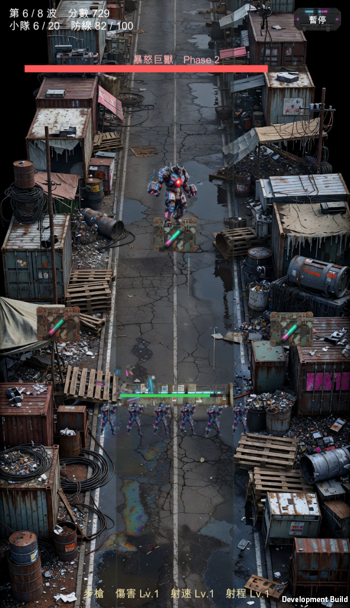
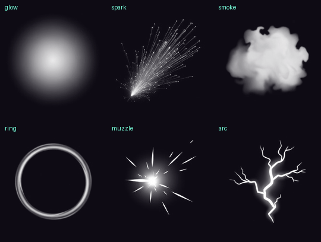
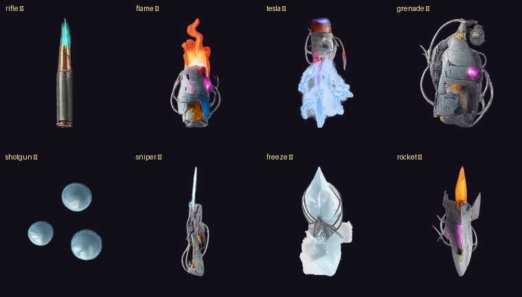

殭屍防禦 · 場上素材
把場上剩下的色塊佔位全部換掉。素材四張 $0.80（一張作廢），掉落物 9 種沿用既有圖示、$0。



ZlUiArt.Icon 的 sprite 是給 UI 用的、pixelsPerUnit 固定 100；世界座標靠 localScale = U(px) 定尺寸，前提是 sprite 等於 1 單位高。所有旗標都是綠的，是靠「印出畫面上最大的物件」抓到 Pickup_minion 74x156px 才發現。| 項目 | 結果 |
|---|---|
| 投射物載入 | 8/8 |
| 特效形狀載入 | 6/6 |
| 掉落物圖示對應 | 8/8 |
| 封印箱 | 有 |
| 超過 60px 的單位／道具 | 0 個（新增的尺寸上限斷言） |
| 執行期例外 | 0 |
駐守物目前先用它的靜態圖示頂著，不再是灰方塊，但動態版（6 種 × 射擊／被破壞，$3.84）還沒做。那是剩下唯一一批要花錢的美術。
commit 960a608 · #35 小計 $0.80